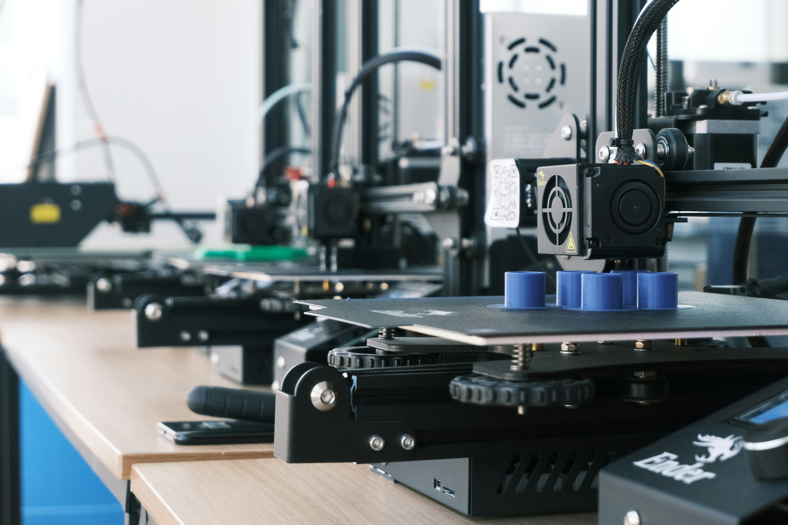
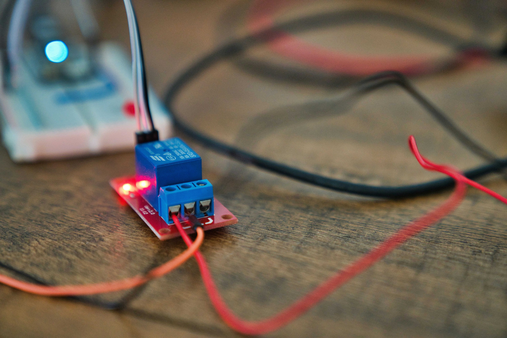
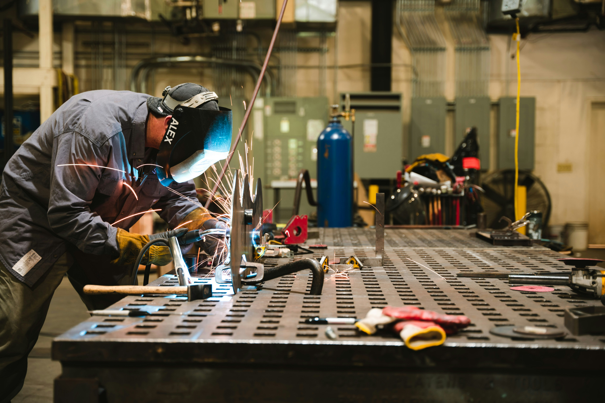

Digital Fabrication
Access to 3D printers, laser cutters, and CNC routers — classes teach file prep, safety, and workflow from concept to finished part.

Create Together. Share Knowledge.
From woodworking and metalwork to electronics and 3D printing, our space offers a rotating schedule of instructor-led classes and open lab hours.
Access to 3D printers, laser cutters, and CNC routers — classes teach file prep, safety, and workflow from concept to finished part.

Intro to microcontrollers, soldering clinics, and interactive projects that combine hardware and software for makers of all ages.

Tool training for saws, drills, and metalworking equipment — supervised open shop times help you build durable projects safely.
